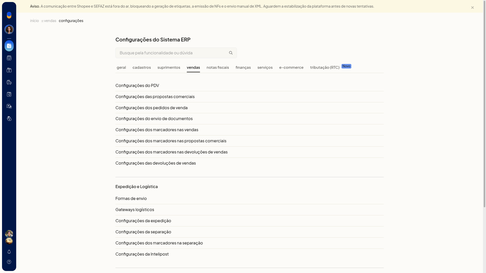

Configurar a expedição
As configurações da expedição do ERP da Olist definem quando o pedido entra na expedição, o que é impresso ao finalizar e se a conferência, o valor declarado, o email de rastreio e o envio do XML ficam ligados. Nessa tela você também ajusta os modelos de email de rastreio, de entrega e de XML.
Como acessar
Acesse Configurações > Configurações ERP > Vendas > Configurações da expedição.

Envio para a expedição
Em Envio para a expedição, escolha quando o pedido vai para a expedição:
- Manual
- ao salvar o pedido
- ao aprovar o pedido
- ao salvar a nota fiscal
- Automático ao autorizar a nota fiscal
Imprimir automaticamente ao finalizar expedição
Em Imprimir automaticamente ao finalizar expedição, selecione os documentos impressos ao finalizar a expedição. A seleção pode reunir DANFE e Etiqueta de envio.
Valor declarado
O valor declarado pode usar o informado na venda e, na falta dele, o total dos produtos. A outra opção é Sem valor declarado.

Opções da expedição
A mesma tela reúne estas opções, que você liga ou desliga:
- Imprimir valor declarado nas etiquetas
- Habilitar conferência de pedidos: com a opção ligada, a conferência de pedidos fica disponível. A conferência dos agrupamentos selecionados só aparece quando essa opção está habilitada.
- Imprimir pedidos cancelados na lista de coleta
- Mostrar valor das mercadorias
- Enviar código de rastreio por e-mail ao concluir
- Imprimir DANFe junto com a etiqueta na impressão manual beta
Enviar automaticamente o XML para a transportadora ao concluir a expedição
Enviar automaticamente o XML para a transportadora ao concluir a expedição envia o XML para o email de NF-e do contato da transportadora.

Modelos de email
Na mesma tela há modelos de email de rastreio, de entrega e de XML.
- o modelo de entrega usa o assunto Pedido entregue, com [NOME_CLIENTE] e [NUMERO_PEDIDO_ECOMMERCE]
- o modelo de XML usa o assunto XML referente [IDENTIFICACAO]